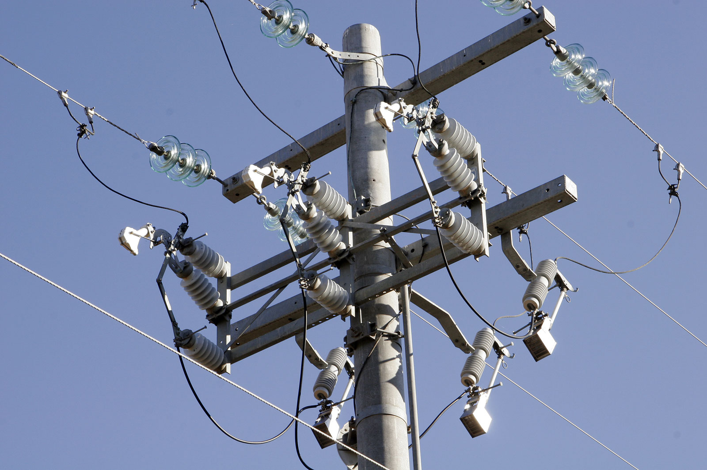
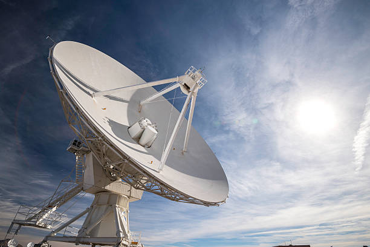
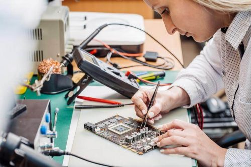

Electrical engineering is an engineering discipline concerned with the study, design, and application of equipment, devices, and systems which use electricity, electronics, and electromagnetism. It emerged as an identifiable occupation in the latter half of the 19th century after commercialization of the electric telegraph, the telephone, and electrical power generation, distribution, and use. Electrical engineering is now divided into a wide range of different fields, including computer engineering, systems engineering, power engineering, telecommunications, radio-frequency engineering, signal processing, instrumentation, photovoltaic cells, electronics, and optics and photonics. Many of these disciplines overlap with other engineering branches, spanning a huge number of specializations including hardware engineering, power electronics, electromagnetics and waves, microwave engineering, nanotechnology, electrochemistry, renewable energies, mechatronics/control, and electrical materials science. What exactly does an electrical engineer do?
|
|
Subbfieds of electrical Engineer.Power and energy Telecommunications engineering focuses on the transmission of information across a communication channel such as a coax cable, optical fiber or free space. Transmissions across free space require information to be encoded in a carrier signal to shift the information to a carrier frequency suitable for transmission; this is known as modulation. Popular analog modulation techniques include amplitude modulation and frequency modulation. The choice of modulation affects the cost and performance of a system and these two factors must be balanced carefully by the engineer. Once the transmission characteristics of a system are determined, telecommunication engineers design the transmitters and receivers needed for such systems. These two are sometimes combined to form a two-way communication device known as a transceiver. A key consideration in the design of transmitters is their power consumption as this is closely related to their signal strength.[Typically, if the power of the transmitted signal is insufficient once the signal arrives at the receiver's antenna(s), the information contained in the signal will be corrupted by noise, specifically static. |
 |
|  |
Telecommunications.Telecommunications engineering focuses on the transmission of information across a communication channel such as a coax cable, optical fiber or free space. Transmissions across free space require information to be encoded in a carrier signal to shift the information to a carrier frequency suitable for transmission; this is known as modulation. Popular analog modulation techniques include amplitude modulation and frequency modulation. The choice of modulation affects the cost and performance of a system and these two factors must be balanced carefully by the engineer. Once the transmission characteristics of a system are determined, telecommunication engineers design the transmitters and receivers needed for such systems. These two are sometimes combined to form a two-way communication device known as a transceiver. A key consideration in the design of transmitters is their power consumption as this is closely related to their signal strength.[Typically, if the power of the transmitted signal is insufficient once the signal arrives at the receiver's antenna(s), the information contained in the signal will be corrupted by noise, specifically static. |
Control engineeringControl engineering focuses on the modeling of a diverse range of dynamic systems and the design of controllers that will cause these systems to behave in the desired manner. To implement such controllers, electronics control engineers may use electronic circuits, digital signal processors, microcontrollers, and programmable logic controllers (PLCs). Control engineering has a wide range of applications from the flight and propulsion systems of commercial airliners to the cruise control present in many modern automobiles. It also plays an important role in industrial automation. . Control engineers often use feedback when designing control systems. For example, in an automobile with cruise control the vehicle's speed is continuously monitored and fed back to the system which adjusts the motor's power output accordingly Where there is regular feedback, control theory can be used to determine how the system responds to such feedback. |
 |
|  |
ElectronicsElectronic engineering involves the design and testing of electronic circuits that use the properties of components such as resistors, capacitors, inductors, diodes, and transistors to achieve a particular functionality. The tuned circuit, which allows the user of a radio to filter out all but a single station, is just one example of such a circuit. Another example to research is a pneumatic signal conditioner. Before the invention of the integrated circuit in 1959, electronic circuits were constructed from discrete components that could be manipulated by humans. These discrete circuits consumed much space and power and were limited in speed, although they are still common in some applications. By contrast, integrated circuits packed a large number—often millions—of tiny electrical components, mainly transistors, into a small chip around the size of a coin. This allowed for the powerful computers and other electronic devices we see today. |
Signal ProcessingSignal processing deals with the analysis and manipulation of signals. Signals can be either analog, in which case the signal varies continuously according to the information, or digital, in which case the signal varies according to a series of discrete values representing the information. For analog signals, signal processing may involve the amplification and filtering of audio signals for audio equipment or the modulation and demodulation of signals for telecommunications. For digital signals, signal processing may involve the compression, error detection and error correction of digitally sampled signals. DSP processor ICs are found in many types of modern electronic devices, such as digital television sets,radios, Hi-Fi audio equipment, mobile phones, multimedia players, camcorders and digital cameras, automobile control systems, noise cancelling headphones, digital spectrum analyzers, missile guidance systems, radar systems, and telematics systems. In such products, DSP may be responsible for noise reduction, speech recognition or synthesis, encoding or decoding digital media, wirelessly transmitting or receiving data, triangulating positions using GPS, and other kinds of image processing, video processing, audio processing, and speech processing. |
 |